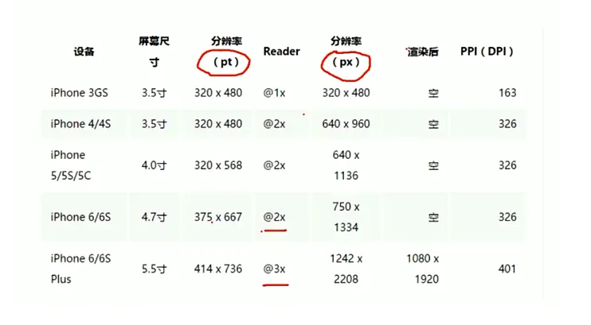
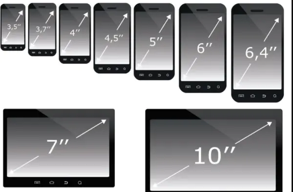
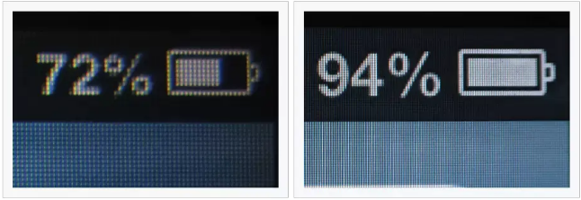
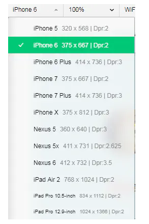
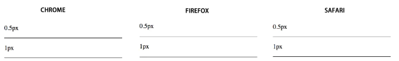
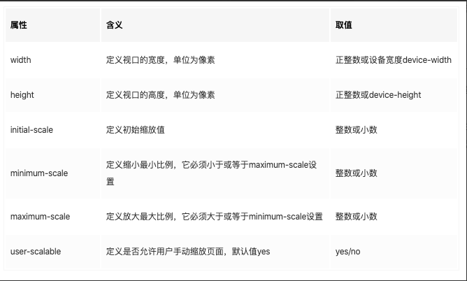
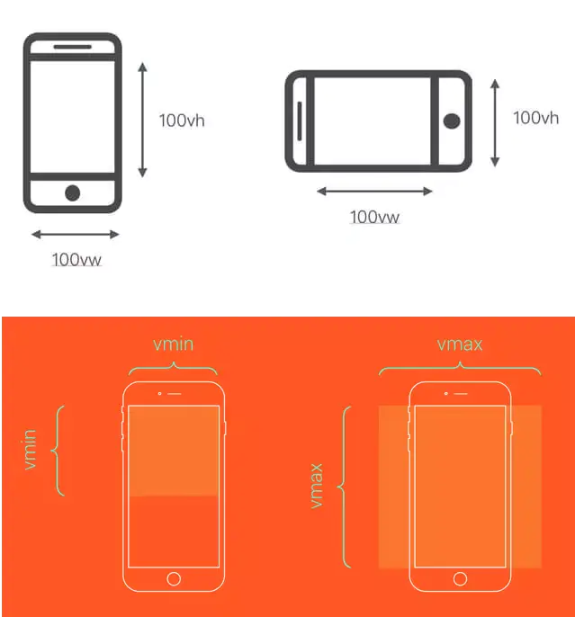

你了解过移动端适配吗？¶
前言¶
很多人聊起移动端适配都是懵逼状态，都想口吐芬芳。难道移动端还要适配，直接px写死，其他自适应不就完了吗？其实不然，要求严格的公司会要求缩放比例完全相同，简单说就是，在每个手机上的每一行的字数都要一样。接下来，我们就要细说移动端适配的前世今生
1、为什么要移动端适配？¶
一般情况下设计稿的设计师按照375的尺寸设计，然而，在现在移动终端（就是手机）快速更新的时代，每个品牌的手机都有着不同的物理分辨率，这样就会导致，每台设备的逻辑分辨率也不尽相同，此时357的设计稿，如果想要还原那基本是不可能了，因为如果一个左右布局，左边如果写死，右边自适应的话，每个设备的右边所展示的内容大小就不尽相同，这是移动端适配就显得尤其重要
既然要了解前世今生，我们就从几个概念说起先上一张图

下面我们一个个解析
屏幕尺寸¶
屏幕尺寸是以屏幕对角线的长度来计量，计量单位为英寸。
如图所示两个对角线的长度就是这个屏幕的尺寸

像素¶
我们看到上图320x480叫分辨率，而这个所谓的分辨率就是说白了就横向320个像素纵向480个像素组成
什么叫像素呢？¶
像素（Pel，pixel;pictureelement），为组成一幅图像的全部亮度和色度的最小图像单元。电视的图像是由按一定间隔排列的亮度不同的像点构成的，形成像点的单位也就是像素，组成图像的最小单位就是像素。从计算机技术的角度来解释，像素是硬件和软件所能控制的最小单位。它指显示屏的画面上表示出来的最小单位，不是图画上的最小单位。一幅图像通常包含成千上万个像素，每个像素都有自己的颜色信息，它们紧密地组合在一起。由于人眼的错觉，这些组合在一起的像素被当成一幅完整的图像。当修改图像的某区域，实际上是在修改该区域内的像素。对这些像素修改的好与坏将决定最终图片的质量。单位面积内的像素越多，图像的效果就越好。彩色电视图像是由成千个像素点所组成的，而且每个像素都是由红绿蓝三种颜色并排组成的。(注意每个像素的大小是不固定的，他是根据设备的分辨率决定的，知识点，后面要考)
什么叫分辨率呢?¶
屏幕分辨率是指纵横向上的像素点数，单位是px。屏幕分辨率确定计算机屏幕上显示多少信息的设置，以水平和垂直像素来衡量。就相同大小的屏幕而言，当屏幕分辨率低时（例如 640 x 480），在屏幕上显示的像素少，单个像素尺寸比较大。屏幕分辨率高时（例如 1600 x 1200），在屏幕上显示的像素多，单个像素尺寸比较小。
知道什么叫做分辨率后，有人就会奇怪，我记得苹果的苹果官网上的苹果6的分辨率为750x1334啊，但是设计稿上苹果6的分辨率为375x667啊,而且各个设备的分辨率都比实际分辨率小很多，这就牵扯到一些历史原因了
设备物理分辨率（设备像素）¶
相信我们所有前端开发者，都是见证了手机这个移动设备发展的过程。从蓝屏手机，到彩屏手机，到诺基亚研发出来触屏手机，再到智能手机一步步发展下来，我们的我们的手越来越清晰，越来越大，所以我们的屏幕发展也越来越迅速。

上图可以清楚的看到，不同分辨率所带来的的差距
从最初的颗粒感相当大的屏幕，到720p再到1080p，甚至于现在各家旗舰手机的2k屏幕，我们的物理分辨率在变得原来越大。这样就暴露出来一个问题，我们如果手机分辨率翻倍，我们的图像不就要被缩小一倍，我们难道要在每个设备上就出个设计稿，每个设备的分辨不尽相同啊，其实你担忧的问题，我们的乔帮主在很多年前就想到了。这就是我们的逻辑分辨率
逻辑分辨率（设备独立像素）¶
如下图所示，虽然设备物理分辨不同，但是他的这个逻辑分辨率却都差不多，这就要感谢乔帮主了

乔布斯在iPhone4的发布会上首次提出了Retina Display(视网膜屏幕)的概念，在iPhone4使用的视网膜屏幕中，把2x2个像素当1个像素使用，这样让屏幕看起来更精致，但是元素的大小却不会改变。从此以后高分辨率的设备，多了一个逻辑像素。这些设备逻辑像素的差别虽然不会跨度很大，但是仍然有点差别，于是便诞生了移动端页面需要适配这个问题，既然逻辑像素由物理像素得来，那他们就会有一个像素比值
设备像素比¶
设备像素比device pixel ratio简称dpr，即物理像素和设备独立像素的比值。为什么要知道设备像素比呢？因为这个像素比会产生一个非常经典的问题，1像素边框的问题。
1px边框问题¶
当我们css里写的1px的时候，由于它是逻辑像素，导致我们的逻辑像素根据这个设备像素比（dpr）去映射到设备上就为2px，或者3px，由于每个设备的屏幕尺寸不一样，就导致每个物理像素渲染出来的大小也不同（记得上面的知识点吗，设备的像素大小是不固定的），这样如果在尺寸比较大的设备上，1px渲染出来的样子相当的粗矿，这就是经典的一像素边框问题
如何解决¶
核心思路，就是 在web中，浏览器为我们提供了window.devicePixelRatio来帮助我们获取dpr。在css中，可以使用媒体查询min-device-pixel-ratio，区分dpr： 我们根据这个像素比，来算出他对应应该有的大小,但是暴露个非常大的兼容问题

其中Chrome把0.5px四舍五入变成了1px，而firefox/safari能够画出半个像素的边，并且Chrome会把小于0.5px的当成0，而Firefox会把不小于0.55px当成1px，Safari是把不小于0.75px当成1px，进一步在手机上观察iOS的Chrome会画出0.5px的边，而安卓(5.0)原生浏览器是不行的。所以直接设置0.5px不同浏览器的差异比较大，并且我们看到不同系统的不同浏览器对小数点的px有不同的处理。所以如果我们把单位设置成小数的px包括宽高等，其实不太可靠，因为不同浏览器表现不一样。
至于其他解决一像素边框问题网上有一堆答案，在这里我推荐一种非常好用，并且没有副作用的解决方案
transform: scale(0.5) 方案
div {
height:1px;
background:#000;
-webkit-transform: scaleY(0.5);
-webkit-transform-origin:0 0;
overflow: hidden;
}
css根据设备像素比媒体查询后的解决方案
/* 2倍屏 */
@media only screen and (-webkit-min-device-pixel-ratio: 2.0) {
.border-bottom::after {
-webkit-transform: scaleY(0.5);
transform: scaleY(0.5);
}
}
/* 3倍屏 */
@media only screen and (-webkit-min-device-pixel-ratio: 3.0) {
.border-bottom::after {
-webkit-transform: scaleY(0.33);
transform: scaleY(0.33);
}
}
如此，完美的解决一像素看着粗的问题
如何适配¶
viewport¶
视口(viewport)代表当前可见的计算机图形区域。在Web浏览器术语中，通常与浏览器窗口相同，但不包括浏览器的UI， 菜单栏等——即指你正在浏览的文档的那一部分。
那么在移动端如何配置视口呢？ 简单的一个meta标签即可！
<meta name="viewport" content="width=device-width; initial-scale=1; maximum-scale=1; minimum-scale=1; user-scalable=no;">
他们分别什么含义呢？

我们在移动端视口要想视觉效果和体验好，那么我们的视口宽度必去无限接近理想视口
理想视口：一般来讲，这个视口其实不是真是存在的，它对设备来说是一个最理想布局视口尺寸，在用户不进行手动缩放的情况下，可以将页面理想地展示。那么所谓的理想宽度就是浏览器（屏幕）的宽度了。
于是上述的meta设置，就是我们的理想设置，他规定了我们的视口宽度为屏幕宽度，初始缩放比例为1，就是初始时候我们的视觉视口就是理想视口！
其中user-scalable设置为no 可以解决移动端点击事件延迟问题（拓展）
解决适配方法¶
1、rem适配¶
rem是CSS3新增的一个相对单位，这个单位引起了广泛关注。这个单位与em有什么区别呢？区别在于使用rem为元素设定字体大小时，仍然是相对大小，但相对的只是HTML根元素。这个单位可谓集相对大小和绝对大小的优点于一身，通过它既可以做到只修改根元素就成比例地调整所有字体大小，又可以避免字体大小逐层复合的连锁反应。目前，除了IE8及更早版本外，所有浏览器均已支持rem。对于不支持它的浏览器，应对方法也很简单，就是多写一个绝对单位的声明。这些浏览器会忽略用rem设定的字体大小
举个例子：
//假设我给根元素的大小设置为14px
html{
font-size：14px
}
//那么我底下的p标签如果想要也是14像素
p{
font-size:1rem
}
//如此即可
rem的布局 不得不提flexible，flexible方案是阿里早期开源的一个移动端适配解决方案，引用flexible后，我们在页面上统一使用rem来布局。
他的原理非常简单
// set 1rem = viewWidth / 10
function setRemUnit () {
var rem = docEl.clientWidth / 10
docEl.style.fontSize = rem + 'px'
}
setRemUnit();
rem 是相对于html节点的font-size来做计算的。所以在页面初始话的时候给根元素设置一个font-size，接下来的元素就根据rem来布局，这样就可以保证在页面大小变化时，布局可以自适应，
如此我们只需要给设计稿的px转换成对应的rem单位即可
当然，这个方案只是个过渡方案，为什么说是过渡方案
因为当年viewport在低版本安卓设备上还有兼容问题，而vw，vh还没能实现所有浏览器兼容，所以flexible方案用rem来模拟vmin来实现在不同设备等比缩放的“通用”方案，之所以说是通用方案,是因为他这个方案是根据设备大小去判断页面的展示空间大小即屏幕大小，然后根据屏幕大小去百分百还原设计稿，从而让人看到的效果(展示范围)是一样的，这样一来，苹果5 和苹果6p屏幕如果你按照设计稿还原的话，字体大小实际上不一样，而人们在一样的距离上希望看到的大小其实是一样的，本质上，用户使用更大的屏幕，是想看到更多的内容，而不是更大的字。
so，这个用缩放来解决问题的方案是个过渡方案，注定时代所淘汰
2、vw，vh布局¶
vh、vw方案即将视觉视口宽度 window.innerWidth和视觉视口高度 window.innerHeight 等分为 100 份。

vh和vw方案和rem类似也是相当麻烦需要做单位转化，而且px转换成vw不一定能完全整除，因此有一定的像素差。
不过在工程化的今天，webpack解析css 的时候用postcss-loader 有个postcss-px-to-viewport能自动实现px到vw的转化
{
loader: 'postcss-loader',
options: {
plugins: ()=>[
require('autoprefixer')({
browsers: ['last 5 versions']
}),
require('postcss-px-to-viewport')({
viewportWidth: 375, //视口宽度（数字)
viewportHeight: 1334, //视口高度（数字）
unitPrecision: 3, //设置的保留小数位数（数字）
viewportUnit: 'vw', //设置要转换的单位（字符串）
selectorBlackList: ['.ignore', '.hairlines'], //不需要进行转换的类名（数组）
minPixelValue: 1, //设置要替换的最小像素值（数字）
mediaQuery: false //允许在媒体查询中转换px（true/false）
})
]
}
3、px为主，vx和vxxx（vw/vh/vmax/vmin）为辅，搭配一些flex（推荐）¶
之所以推荐使用此种方案，是由于我们要去考虑用户的需求，用户之所以去买大屏手机，不是为了看到更大的字，而是为了看到更多的内容，这样直接使用px是最明智的方案，使用vw，rem等布局手段无可厚非，但是，flex这种弹性布局大行其道的今天，如果如果还用这种传统的思维去想问题显然是有两个原因（个人认为px是最好的，可能有大佬，能用vw，或者rem写出精妙的布局，也说不准）：
1、为了偷懒，不愿意去做每个手机的适
2、不愿意去学习新的布局方式，让flex等先进的布局和你擦肩而过
移动端适配流程¶
1. 在head 设置width=device-width的viewport‘
2. 在css中使用px
3. 在适当的场景使用flex布局，或者配合vw进行自适应
4. 在跨设备类型的时候（pc <-> 手机 <-> 平板）使用媒体查询
5. 在跨设备类型如果交互差异太大的情况，考虑分开项目开发